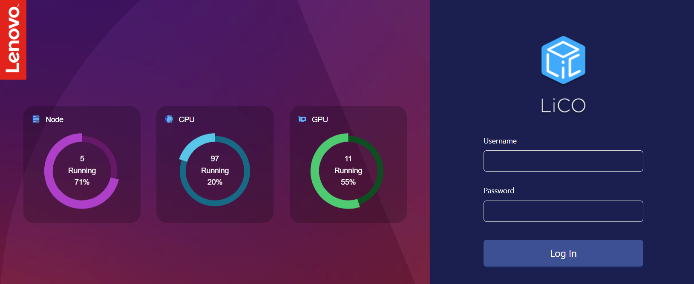
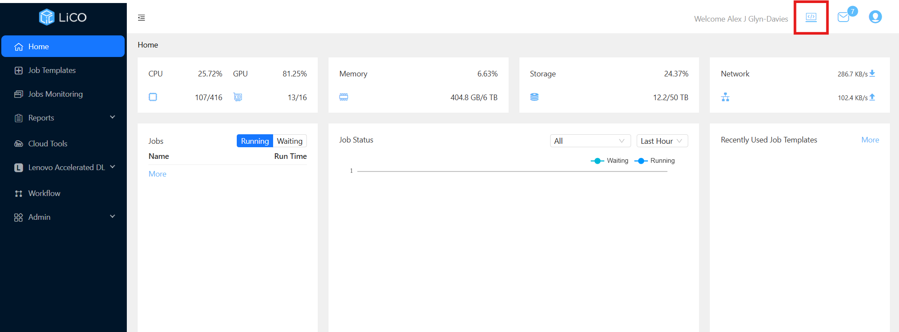
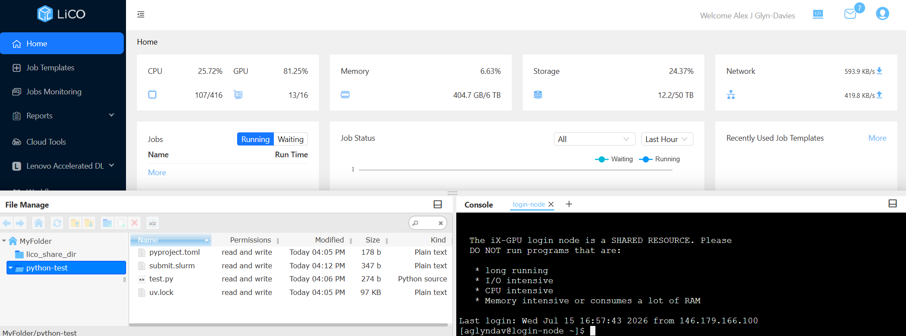
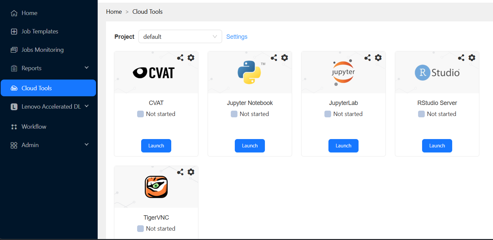
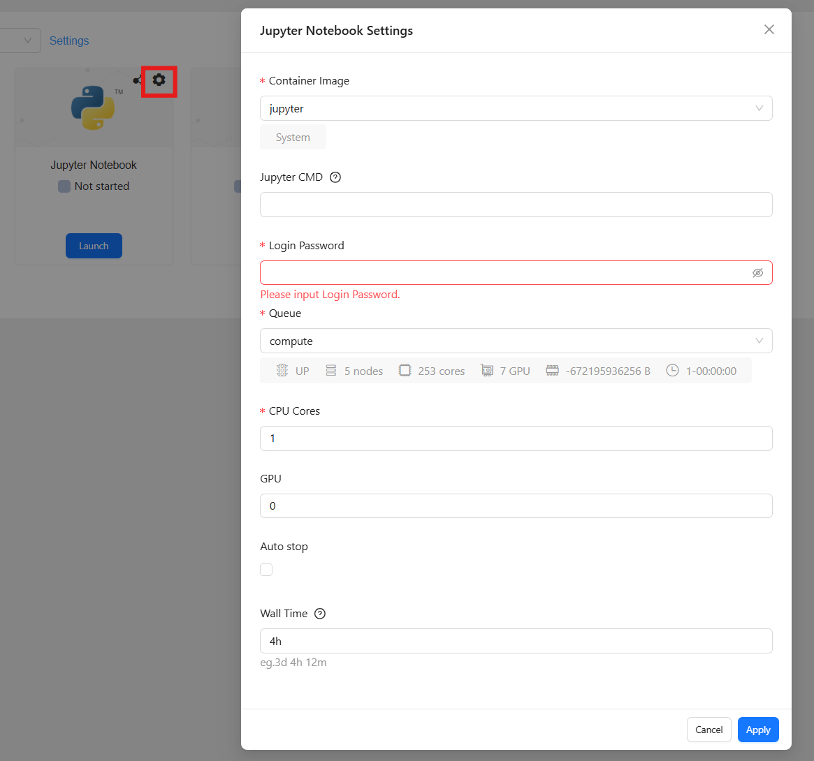

IX-GPU Documentation¶
This documentation provides instructions on how to use the IX-GPU cluster. It covers how to use the web interface and how to use the terminal to login and submit jobs.
If you are not yet registered for the IX-GPU cluster, please email me at a.glyndavies@imperial.ac.uk, give me your imperial details (short imperial name, full imperial email, full name). I will create your account and send back your username andtemporary password which you can use to login for the first time.
Once logged in you should change your temporary password.
Option 1: Using the web interface¶
Login via web interface:¶
Follow the link https://ix-gpu-cloud.ic.ac.uk/. This brings you to the login-page

Use your short imperial name as the username, and the temporary password to login. This will bring you to the homepage -- highlighted here in red is the terminal button -- click this to open a window at the bottom of the page.

At the bottom of the page you will see on the left panel your home directory, and on the right panel the option to login to the login-node. Here you can run commands on the login-node (see Option 2: Using the terminal)

You can easily transfer and manage files using the left panel. You can start jupyter sessions using the "Cloud Tools" section.

Selecting the gear icon on the Jupyter session opens a configuration window where you can set the number of GPUs and other options -- include a simple password which you will use when connecting to the Jupyter session.

Option 2: Using the terminal¶
Login via SSH¶
From your terminal you can run the following command (swapping <username> for your username).
Once you have logged in using your password, you will be greeted with a message giving some simple instructions for running jobs, general information and maintenance notifications. You will see the following if you are logged in to the login-node:
DO NOT run any heavy jobs from the login node. This is a shared resource and should only be used for simple tasks (submitting SLURM jobs or transferring small files). If you are downloading/transferring large files, installing large software, or running heavy computations, please use the compute nodes instead (see Running interactive sessions).
From here you can submit SLURM jobs and run interactive sessions. The next few sections provide a guide for how to do this.
Running interactive sessions¶
Interactive sesssions are shell sessions on the compute nodes - from here you can run intensive computations, download/transfer large files. To start an interactive session, run the following command from the terminal:
This will queue you up for an interactive session. When you are allocated the session you will join and you terminal will look something like this (here I'm logged into nodeix-a17-3).
By default, you will be allocated the following:
1 CPU core
12 GB of RAM
24 hours
Test this out yourself - start an interactive session as above, and use this to install the python package management software uv:
Depending on your use case, you will need to request more resources (CPU cores, RAM, or time for your session). This is specified when starting the interactive session:
This requests the following resources:2 CPU cores
1 GPU
16 GB of RAM
1 hour
It is best practice to request the minimum amount of resources needed for your job, and to request more resources only when necessary.
Running SLURM jobs¶
If you want to queue up a job to run on the cluster, you can use the sbatch command to submit SLURM jobs. It is recommended to use this method of submitting larger jobs, as opposed to waiting to be allocated significant resources in an interactive session.
Again, we must specify the resources needed, but this is done in the job script. Here we give a simple example of a job script running a python file.
Simple Python job¶
First, create a folder in your home directory to store your job script, python files and logs. These tasks can be carried out from the login-node, since they are inexpensive.
Create a new uv project and add in the required packages:
Create a new python file called test.py and copy the below code into it:
import os
import socket
import numpy as np
print(f"Running on node: {socket.gethostname()}")
print(f"SLURM job ID: {os.environ.get('SLURM_JOB_ID')}")
print(f"Allocated CPUs: {os.environ.get('SLURM_CPUS_PER_TASK')}")
values = np.arange(10)
print(f"Mean: {values.mean()}")
Now we have a script to run, we can generate a job script to specify the resources needed and run the job on the cluster. Create a new file called submit.slurm and copy the below code into it:
#!/bin/bash
#SBATCH --job-name=python-test
#SBATCH --output=python-test.out
#SBATCH --error=python-test.err
#SBATCH --time=00:10:00
#SBATCH --ntasks=1
#SBATCH --cpus-per-task=1
#SBATCH --mem=1G
# Move to the directory from which sbatch was run.
cd "$SLURM_SUBMIT_DIR"
# Run Python from the uv-created virtual environment.
uv run test.py
The comments #SBATCH are used to specify the resources needed for the job, and the names of the output and error files. The file python-test.out will contain the standard output of the job (the print statements in the python script), and python-test.err will contain any error messages.
To submit the job to the cluster, run the following command:
This will return a job ID that you can use to track the status of the job, and you are able to exit the terminal and the job will run once it reaches the end of the queue.Once this has completed, you can view the output and error files in the directory from which you submitted the job. Try running the following command and observing the output:
Useful commands for tracking job status¶
Some useful commands for tracking the status of the job and the SLURM queue are shown here. To view the status of a job, run the following command:
To view your own queued jobs, run the following command: